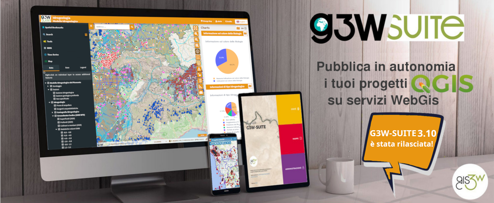
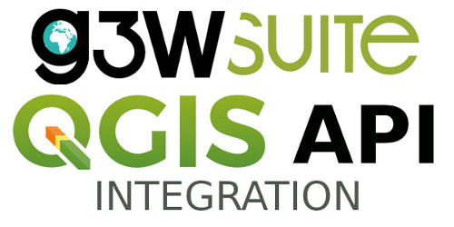
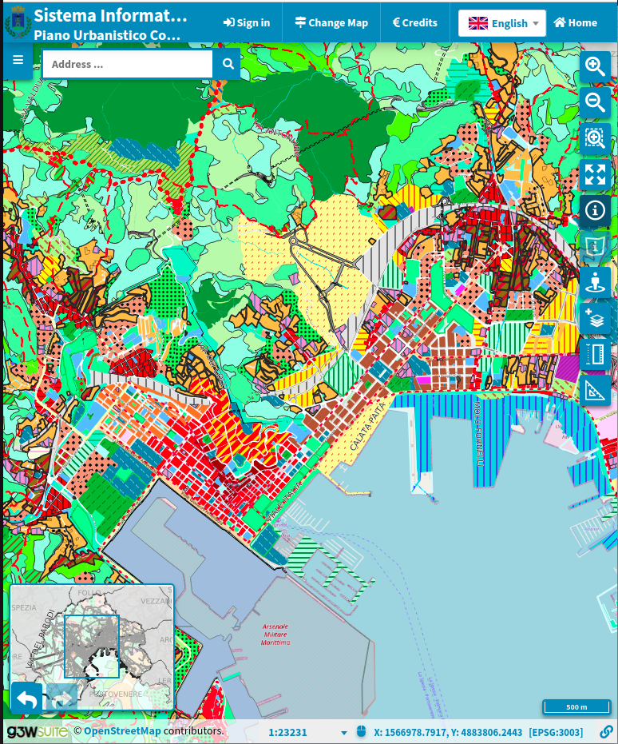
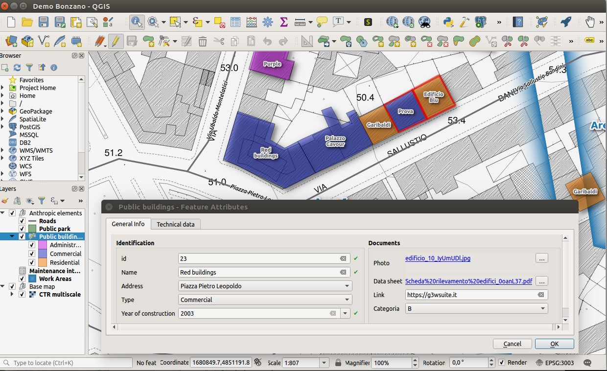

Il modo più semplice e potente per creare e gestire servizi WebGIS in hosting o in house, mantenendo la corrispondenza grafica ed informativa dei tuoi progetti QGIS.
Open Source
Ultima Versione
Pronto all'Uso

Tutti gli strumenti necessari per la condivisione e l'editing geografico in un'unica infrastruttura scalabile.
Configura il tuo progetto su QGIS Desktop, carica i dati su GeoDB o file system ed effettua la pubblicazione in pochi clic su WebGIS.
Personalizza l'interfaccia, i loghi e i testi del portale d'accesso e del client cartografico. Crea ed organizza ambienti e ruoli amministrativi.
Editing geografico ed alfanumerico avanzato, con supporto delle relazioni nativo di QGIS. Feature lock per prevenire sovrascritture multi-utente.
Definisci utenti, gruppi e ruoli per differenziare in modo chirurgico i permessi di visualizzazione, editing e amministrazione.
Stampe basate su layout composer (con supporto Atlante), visualizzazione di grafici con DataPlotly, serie temporali e filtri di ricerca personalizzati.
L'interfaccia del client cartografico è completamente responsive e ottimizzata per la visualizzazione e l'editing su smartphone e tablet.
Trasforma i tuoi progetti cartografici desktop in gestionali webGIS collaborativi.
Progetta la tua mappa su QGIS Desktop impostando simbologie avanzate, etichette, layout di stampa, join, relazioni relazionali e form di editing.

Carica i tuoi database PostGIS/PostgreSQL, Oracle Spatial o file system locali (SpatiaLite, GeoPackage, Shapefile, Raster) per un accesso rapido.

Accedi al pannello amministrativo web di G3W-Suite e carica il file di progetto `.qgz` o `.qgs`. Il client cartografico webGIS verrà generato all'istante.

Crea gruppi di utenti, definisci i permessi di sola lettura o editing, attiva moduli aggiuntivi (come CDU o Catasto) e personalizza le ricerche geografiche.

Soluzioni integrate e moduli pronti all'uso per i Comuni e gli Enti Pubblici italiani.
Sistemi integrati webGIS per la gestione di Piani Regolatori, Stradario, Civici e vincoli ambientali.
Scopri SoluzioniModulo pronto per l'interoperabilità dei dati con l'Archivio Nazionale dei Numeri Civici e delle Strade Urbane.
Modulo PDND ANNCSUInfrastruttura per la condivisione protetta e interoperabile dei dati territoriali tramite API in conformità con la PDND.
PDND InteroperabilitàVisualizza alcuni dei portali cartografici realizzati con la tecnologia G3W-Suite per Pubbliche Amministrazioni ed Enti di ricerca.
Infrastruttura WebGIS metropolitana per il coordinamento territoriale, urbanistico e ambientale dei comuni limitrofi.
Visita il PortalePiano Paesaggistico Regionale del FVG integrato su geoportale per la consultazione interattiva dei vincoli paesaggistici.
Visita il PortalePiattaforma di consultazione cartografica interattiva per la tutela ambientale e la biodiversità del Parco Nazionale.
Visita il PortalePortale cartografico integrato del Comune di Trento per la gestione e consultazione di PRG e stradario comunale.
Visita il PortaleCatalogo cartografico e portale GIS per la condivisione a livello metropolitano di dati su infrastrutture e suolo.
Visita il PortaleGeoportale comunale del Comune di Palermo per l'erogazione di cartografia di base e servizi catastali integrati.
Visita il Portale


Integrazione nativa per rilievi e mappature in campo in tempo reale. Raccogli dati territoriali in modalità offline con l'app di Mergin Maps e sincronizzali istantaneamente con l'infrastruttura server di G3W-SUITE.
Scopri le Soluzioni Dedicate